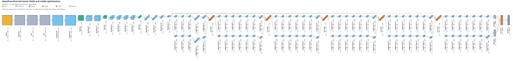
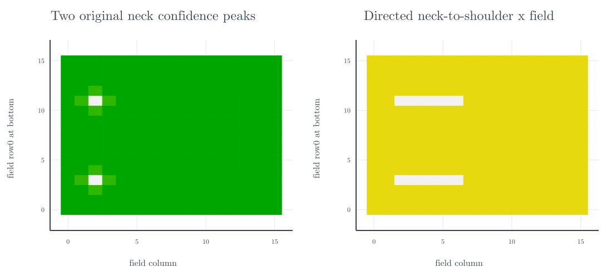
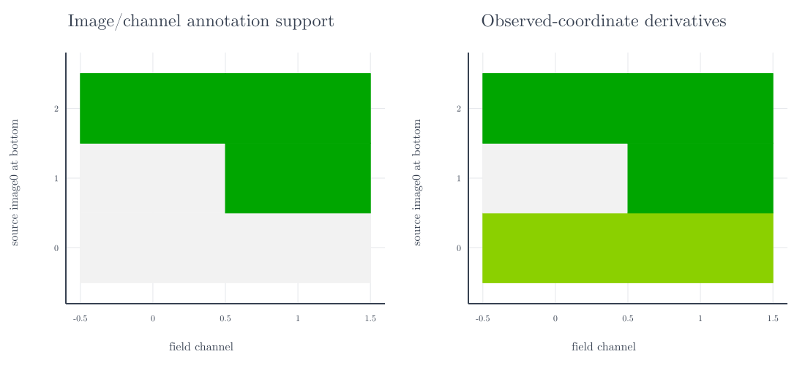
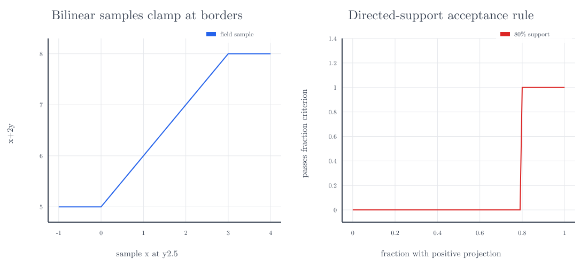
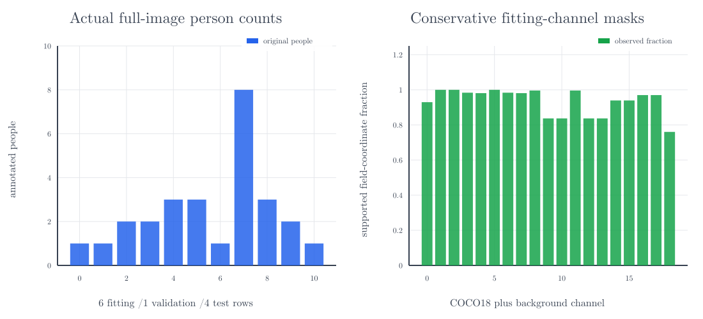
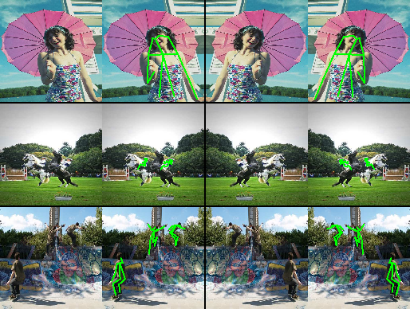
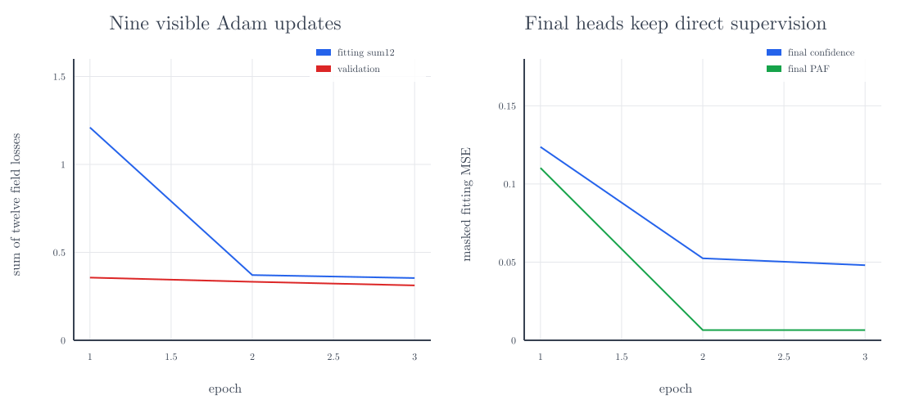
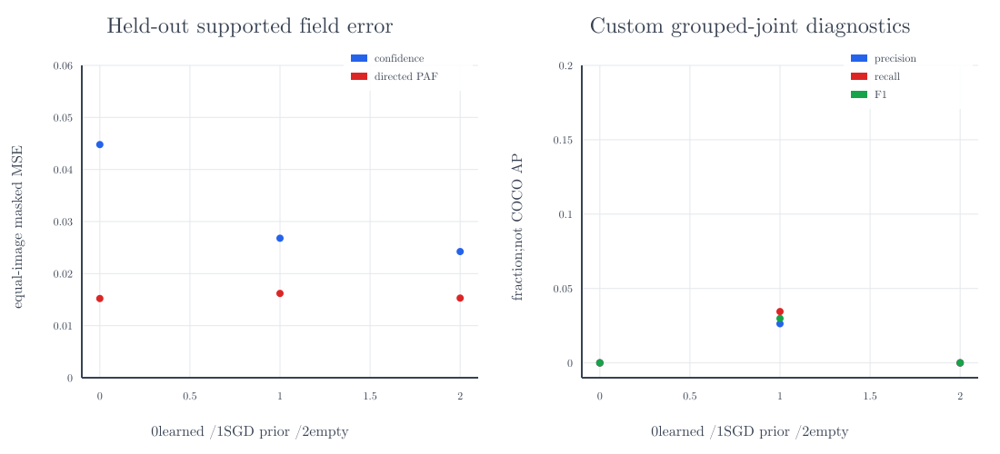
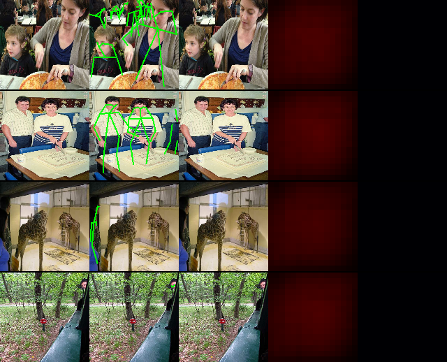

OpenPose:directed tensor fields and visible optimization
Abstract
A complete six-stage OpenPose teaching model learns confidence and directed limb fields from genuine whole COCO8-Pose photographs. Explicit SGD and Adam loops,independent target/decoder checks and all held-out images expose both the computation and its limited pose results.
Source example: examples/cpp/source/nn/1_convolutional_neural_networks/1.8_other_vision_tasks/openpose_pafs.cpp.
The method
Construct annotation-supported confidence/PAF targets,supervise all twelve raw fields,and decode local peaks through directed line integration and conflict-safe person assembly. Numerical preprocessing,objectives,decoding,metrics and figure values use the tensor library. Containers retain only metadata,topology and presentation.
The concept diagram below is drawn by dm::graphics::Diagram. Its editable C++
source is the complete block below; regeneration uses the same datamunge toolchain
as the numerical examples. Exports consume the saved local SVG.
#include <dm/dm.hpp>
int main() {
std::filesystem::create_directories("build");
dm::graphics::Diagram diagram;
diagram.node("n0", {0.0, 0}, "Whole RGB\n and annotations");
diagram.node("n1", {5.2, 0}, "Six supervised\n field pairs");
diagram.node("n2", {10.4, 0}, "Directed links\n and person groups");
diagram.edge("n0", "n1").edge("n1", "n2");
diagram.save_svg("build/openpose_pafs_concept.svg");
}Executed tensor architecture
All displayed prediction branches are joined only to keep them reachable in one diagram; the flattened display output is not postprocessed detection or pose inference.
This figure executes the inference configuration shown in the code, using a zero-valued shape probe without fitting or loading a checkpoint. Named stage boundaries group whole subgraphs where available; other nodes retain functional-layer detail. Exact batch-inclusive shapes and reachable parameter totals come from the trace. Shared linear scales map spatial dimensions and channel counts to blocks; the one-pixel visibility floor is disclosed in the legend. Labels use compact monospace text, rotate counterclockwise and sit beside their own glyphs. Arrows flow left to right; wide diagrams scroll at native size on the website.
#include <dm/dm.hpp>
int main() {
namespace n = dm::nn;
namespace m = n::models;
n::set_num_threads(2);
std::filesystem::create_directories("build");
n::ParameterStore p(197);
n::Module architecture_model(
[&](const n::Tensor& image) {
const auto out = m::OpenPose(p, image, 8);
return n::concat(
{out.heatmaps.back().reshape({1, -1}), out.pafs.back().reshape({1, -1})}, 1);
},
"OpenPose:directed tensor fields and visible optimization");
n::ModelPlotOptions options;
options.style = n::ModelPlotStyle::Flow;
options.detail = n::ModelPlotDetail::Blocks;
options.labels = {.type = n::ModelPlotLabel::NameAndShape, .size = 12, .wrap = 24};
options.spacing = {.layer = 24, .lane = 12, .label = 8, .margin = 20};
options.sizing.spatial_size = 96;
options.sizing.channel_size = 42;
options.sizing.minimum_extent = 1;
options.opacity = .8;
const auto diagram = architecture_model.plot(n::zeros({1, 128, 128, 3}), options);
diagram.save_svg("build/openpose_pafs_architecture.svg");
std::print(
"{} displayed nodes; {} reachable learned values.\n",
diagram.nodes().size(),
diagram.parameter_count());
}108 displayed nodes; 1217438 reachable learned values.

A directed field associates joints with people
Each of19 anatomical limbs has an x/y field pair. Inside its strip,the target is the unit vector from its first joint to its second. Overlapping people average vectors;opposing limbs can cancel. Zero-length limbs add no vector. Joint confidence is the maximum truncated Gaussian over people. Background is1 minus the maximum joint confidence. COCO17 becomes18 only by deriving a neck when both shoulders are labeled. This is annotation transformation, not an invented person or a learned joint.
Unknown joints or limbs disable their channel only inside the original person's box. These conservative rectangles are a teaching policy;they are not COCO crowd segmentation masks. Visibility1 and2 both supervise. Targets use half-pixel16/128 coordinates,sigma1 and strip radius1 by default. The fixture shows two disjoint horizontal chains and their unit directed PAF.
#include <dm/dm.hpp>
int main() {
namespace n = dm::nn;
namespace m = n::models;
std::vector<float> metadata(2 * 18 * 3, 0.f);
for (int p = 0; p < 2; ++p)
for (int j : {1, 2, 3}) {
const int at = (p * 18 + j) * 3;
metadata[at] = j == 1 ? 19.5f : j == 2 ? 51.5f : 67.5f;
metadata[at + 1] = p ? 91.5f : 27.5f;
metadata[at + 2] = 2;
}
m::PafData d{n::zeros({1, 128, 128, 3}), n::from_vector(metadata, {1, 2, 18, 3}),
n::full({1, 2, 4}, 16.), n::full({1}, 2., n::DType::Int32),
n::zeros({1}, n::DType::Int32)};
const auto t = m::PreparePafTargets(d, 16, 128, .5, .75);
const auto decoded = m::DecodePafs(t.heatmap, t.paf, 0);
std::print("Independent two-person fixture:{} peaks,{} directed links,{} people;reversed "
"PAF {} people.\n",
decoded.peaks.size(), decoded.links.size(), decoded.people.size(),
m::DecodePafs(t.heatmap, -t.paf, 0).people.size());
auto a = n::plot_tensor_map(n::reverse(n::select(n::select(t.heatmap, 0, 0), 2, 1), {0}), 0,
1),
b = n::plot_tensor_map(n::reverse(n::select(n::select(t.paf, 0, 0), 2, 0), {0}), -1, 1);
a.title("Two original neck confidence peaks")
.x_label("field column")
.y_label("field row0 at bottom");
b.title("Directed neck-to-shoulder x field")
.x_label("field column")
.y_label("field row0 at bottom");
auto layout = dm::graphics::RLayout::create(1, 2);
layout.add(a).add(b).size(1100, 500).fit_panels().save_svg(
"build/openpose_pafs_targets.svg");
}Independent two-person fixture:6 peaks,4 directed links,2 people;reversed PAF 0 people.

Every stage sees a safe masked objective
For each field,average squared error over each image's observed coordinates, then average the supported images equally. Select missing predictions and truth out before subtracting,so unknown NaNs and their gradients disappear. Empty images are excluded;an entirely empty batch has a graph-connected0. The two supported images below have errors2 and3:loss=(4+9)/2=6.5.
#include <dm/dm.hpp>
int main() {
namespace n = dm::nn;
namespace m = n::models;
const auto mask = n::tensor({1., 1., 1., 0., 0., 0.}, {3, 1, 1, 2});
const auto active = n::greater(mask, .5);
const auto values = n::tensor({2., 2., 3., NAN, NAN, NAN}, {3, 1, 1, 2});
const auto x = (n::ones({3, 2, 2, 2}) * values).requires_grad_();
const auto truth = n::where(active, n::zeros_like(x), n::full(x.shape(), NAN));
const auto loss = m::PafMaskedMSE(x, truth, mask * n::ones_like(x));
const auto g = n::grad(loss, {x})[0];
std::print("Loss {:.6f};finite every adjoint:{};unknown adjoint max {:.3g};Double "
"evaluation {:.6f}.\n",
loss.item(), n::all(n::is_finite(g)).item<bool>(),
n::max(n::where(active, 0., n::abs(g))).item(),
m::PafFieldMSE(x, truth, mask * n::ones_like(x)).item());
auto a = n::plot_tensor_map(n::reverse(mask.reshape({3, 2}), {0}), 0, 1),
b = n::plot_tensor_map(n::reverse(n::mean(g, {1, 2}), {0}), 0, .75);
a.title("Image/channel annotation support")
.x_label("field channel")
.y_label("source image0 at bottom");
b.title("Observed-coordinate derivatives")
.x_label("field channel")
.y_label("source image0 at bottom");
auto layout = dm::graphics::RLayout::create(1, 2);
layout.add(a).add(b).size(1100, 500).fit_panels().save_svg("build/openpose_pafs_loss.svg");
}Loss 6.500000;finite every adjoint:true;unknown adjoint max 0;Double evaluation 6.500000.

All six stages and both feedback branches remain connected
The VGG-shaped backbone has10 convolutions plus2 CPM convolutions and3 VALID pools. Input is BGR*(255/256)-.5. Confidence and PAF heads are linear, unbounded19/38 channel fields. Five later stages concatenate both previous fields with shared features,and each branch uses five7x7 then two1x1 layers. The full network has52,311,446 learned scalars;divisor8 compact widths retain 1,217,438 scalars. Both have92 convolutions,184 learned leaves and100 retained activations. No BN,pretrained weights or person-box forward inputs. The native suite executes full128px backward as well as compact backward. This compact probe also checks final loss reaches both initial fields.
#include <dm/dm.hpp>
int main() {
namespace n = dm::nn;
namespace m = n::models;
n::set_num_threads(2);
n::ParameterStore p(197);
const auto image =
(.5 + .4 * n::sin(n::arange(0, 2 * 128 * 128 * 3) * .13)).reshape({2, 128, 128, 3});
const auto out = m::OpenPose(p, image, 8);
const auto final = n::mean(n::square(out.heatmaps[5])) + n::mean(n::square(out.pafs[5]));
const auto gradients = n::grad(final, {out.heatmaps[0], out.pafs[0]});
std::print(
"Compact learned values {},leaves {},stages {};final-to-first confidence/PAF gradient "
"norms {:.6f}/{:.6f}.\n| stage | confidence shape | PAF shape |\n|---:|---|---|\n",
p.count(), p.size(), out.stages.size(), n::sqrt(n::sum(n::square(gradients[0]))).item(),
n::sqrt(n::sum(n::square(gradients[1]))).item());
for (int s = 0; s < 6; ++s)
std::print("| {} | {} | {} |\n", s + 1, out.heatmaps[s].shape(), out.pafs[s].shape());
}Compact learned values 1217438,leaves 184,stages 100;final-to-first confidence/PAF gradient norms 0.063893/0.090365.
| stage | confidence shape | PAF shape |
|---|---|---|
| 1 | [2, 16, 16, 19] | [2, 16, 16, 38] |
| 2 | [2, 16, 16, 19] | [2, 16, 16, 38] |
| 3 | [2, 16, 16, 19] | [2, 16, 16, 38] |
| 4 | [2, 16, 16, 19] | [2, 16, 16, 38] |
| 5 | [2, 16, 16, 19] | [2, 16, 16, 38] |
| 6 | [2, 16, 16, 19] | [2, 16, 16, 38] |
Local peaks become conflict-safe person groups
Find3x3 local maxima above.05,keeping the first raster position for plateaus and the best20 per joint type. Candidate limbs use10 clamped bilinear samples. Require projections>.05 at at least80% of samples;add the source distance prior min(0,.5*field_height/length-1),and require positive score. Stable greedy matching enforces one endpoint per limb type. Person assembly refuses conflicting same-type peaks and retains at least3 joints with sufficient mean confidence/link score. Every numerical rank,sample,projection and score uses tensors;C++ containers manage joint identities and subset membership. These fixed decoder thresholds are not tuned on this four-image test.
#include <dm/dm.hpp>
int main() {
namespace n = dm::nn;
namespace m = n::models;
const auto x = n::arange(0, 4).reshape({1, 1, 4, 1});
const auto y = n::arange(0, 4).reshape({1, 4, 1, 1});
const auto channels = n::arange(0, 38).reshape({1, 1, 1, 38});
const m::PafTensorField field(x + 2. * y + channels);
std::print("Affine field x+2y+c:interior(1.25,2.5,c0) {:.6f},clamped(-3,9,c0) {:.6f}.\n",
m::PafSample(field, 0, 1.25, 2.5, 0), m::PafSample(field, 0, -3, 9, 0));
const auto positions = n::arange(-1, 4.001, .02);
const auto fixed = n::full(positions.shape(), 2.5);
const auto samples = m::PafSamples(field, 0, positions, fixed, 0);
auto a = dm::graphics::RPlot::create(), b = dm::graphics::RPlot::create();
a.lines(positions.to_vector<double>(), samples.to_vector<double>(), "field sample",
{37, 99, 235})
.title("Bilinear samples clamp at borders")
.x_label("sample x at y2.5")
.y_label("x+2y");
const auto fraction = n::arange(0, 1.001, .01);
const auto accepted = n::greater_equal(fraction, .8).to(n::DType::Float64);
b.lines(fraction.to_vector<double>(), accepted.to_vector<double>(), "80% support",
{220, 38, 38})
.title("Directed-support acceptance rule")
.x_label("fraction with positive projection")
.y_label("passes fraction criterion")
.y_limits(-.1, 1.4);
auto layout = dm::graphics::RLayout::create(1, 2);
layout.add(a).add(b).size(1100, 500).fit_panels().save_svg(
"build/openpose_pafs_decoder.svg");
}Affine field x+2y+c:interior(1.25,2.5,c0) 6.250000,clamped(-3,9,c0) 6.000000.

Real full photographs and an explicitly SGD-fitted field prior
The pinned official COCO8-Pose archive contains8 original photographs and human COCO17 annotations. Train IDs36/49/77 fit;86 validates;original validation IDs110/113/136/151 are held out. Whole images resize to128px with tensor legacy bilinear RGB preprocessing;no person crop or box enters prediction. Fitting-only anatomical mirrors produce6 fitting rows,validation1,test4. The test set has14 annotated people and116 labeled non-neck joints. The same source photograph never crosses splits. Boxes are used only for missing-label masks and the declared evaluation rule.
#include <dm/dm.hpp>
int main() {
const std::filesystem::path cache = dm::datasets::data_home();
dm::datasets::prepare_example_data("pose", (cache / "human_pose").string());
}Fit19+38 spatial reference channels with one visible Double SGD(.5) update on summed per-coordinate supported MSE. Unsupported coordinates get0. The closed-form masked mean serves only as a parity oracle. Its labels come exclusively from the fitting partition. All6 fitting inputs are shown.
#include <dm/dm.hpp>
int main() {
namespace n = dm::nn;
namespace m = n::models;
n::set_num_threads(2);
std::filesystem::path cache;
if (const auto *p = std::getenv("DATAMUNGE_DATA_DIR"))
cache = p;
else if (const auto *p = std::getenv("XDG_CACHE_HOME"))
cache = std::filesystem::path(p) / "datamunge/datasets";
else
cache = std::filesystem::path(std::getenv("HOME")) / ".cache/datamunge/datasets";
std::filesystem::path root = cache / "human_pose";
if (const auto *p = std::getenv("DATAMUNGE_POSE_DIR"))
root = p;
else
dm::datasets::prepare_example_data("pose", root.string());
const auto split = m::LoadPafImages(root);
const auto fitting = m::PreparePafTargets(split.fit);
n::ParameterStore prior(199, n::DType::Float64);
const auto h = prior.get("heat", {1, 16, 16, 19}, n::init::zeros());
const auto f = prior.get("paf", {1, 16, 16, 38}, n::init::zeros());
n::OptimizerConfig options;
options.kind = n::OptimizerKind::Sgd;
n::Optimizer sgd(prior, .5, options);
std::vector<n::Tensor> terms;
for (const auto &item : std::vector<std::array<n::Tensor,3>>{
{h, fitting.heatmap, fitting.heatmask}, {f, fitting.paf, fitting.pafmask}}) {
const auto active = n::greater(item[2].to(n::DType::Float64), .5);
const auto count = n::sum(active.to(n::DType::Float64), {0}, true);
const auto diff =
n::where(active, item[0], 0.) - n::where(active, item[1].to(n::DType::Float64), 0.);
terms.push_back(
n::sum(n::sum(n::square(diff), {0}, true) / n::maximum(count, n::ones_like(count))));
}
sgd.minimize(terms[0] + terms[1]);
const auto heat = h.detach().to(n::DType::Float32);
const auto paf = f.detach().to(n::DType::Float32);
const auto parity =
n::maximum(n::max(n::abs(heat - m::PafMeanField(fitting.heatmap, fitting.heatmask, 1))),
n::max(n::abs(paf - m::PafMeanField(fitting.paf, fitting.pafmask, 1))));
if (parity.item() > 1e-7)
return 1;
std::print(
"One explicit SGD(.5) update,{} learned reference values;closed-form parity {:.3g}.\n",
prior.count(), parity.item());
std::filesystem::create_directories("build");
std::filesystem::create_directories("figures");
n::save_npz("build/openpose_pafs_sgd_prior.npz", {{"heat", heat}, {"paf", paf}});
std::vector<m::PafDecoded> empty(6);
const auto tiles = m::PafPreviewTiles(split.fit, empty, fitting.heatmap, fitting.paf);
n::save_image_grid(n::slice_axis(tiles, 2, 0, 256), "build/openpose_pafs_inputs.png", 2, 0,
1, 2, 0, 1);
auto a = dm::graphics::RPlot::create(), b = dm::graphics::RPlot::create();
const auto people =
n::concat({split.fit.counts, split.validation.counts, split.test.counts}, 0)
.to(n::DType::Float64);
const auto support = n::mean(fitting.heatmask.to(n::DType::Float64), {0, 1, 2});
a.bars(n::arange(0, 11).to_vector<double>(), people.to_vector<double>(), "original people",
{37, 99, 235})
.title("Actual full-image person counts")
.x_label("6 fitting /1 validation /4 test rows")
.y_label("annotated people")
.y_limits(0, 10);
b.bars(n::arange(0, 19).to_vector<double>(), support.to_vector<double>(),
"observed fraction", {22, 163, 74})
.title("Conservative fitting-channel masks")
.x_label("COCO18 plus background channel")
.y_label("supported field-coordinate fraction")
.y_limits(0, 1.25);
auto layout = dm::graphics::RLayout::create(1, 2);
layout.add(a).add(b).size(1100, 500).fit_panels().save_svg("build/openpose_pafs_data.svg");
}One explicit SGD(.5) update,14592 learned reference values;closed-form parity 5.96e-08.


Twelve supervised losses and every Adam update are visible
Warm all184 learned leaves before constructing Adam(.001). Each of9 updates receives2 whole fitting images,with all6 confidence and6 PAF heads supervised. There is no BN state. Validation alone selects the checkpoint. Restore a separate learned store,and pass only RGB to the network. Verify repeat/checkpoint parity,single/batch agreement,all184 leaves immutable, and different predictions for different observed photos.
Grouped-joint precision/recall/F1 exclude the derived neck and use greedy one-to-one person matching at inclusive.2*max(original box width,height). This custom teaching diagnostic is not COCO OKS/AP. Compare the unchanged SGD field prior and empty/background predictor on the same held-out images. All continuous evaluation and plotted values use tensors.
#include <dm/dm.hpp>
int main() {
namespace n = dm::nn;
namespace m = n::models;
n::set_num_threads(2);
std::filesystem::path cache;
if (const auto *p = std::getenv("DATAMUNGE_DATA_DIR"))
cache = p;
else if (const auto *p = std::getenv("XDG_CACHE_HOME"))
cache = std::filesystem::path(p) / "datamunge/datasets";
else
cache = std::filesystem::path(std::getenv("HOME")) / ".cache/datamunge/datasets";
std::filesystem::path root = cache / "human_pose";
if (const auto *p = std::getenv("DATAMUNGE_POSE_DIR"))
root = p;
else
dm::datasets::prepare_example_data("pose", root.string());
const auto split = m::LoadPafImages(root);
n::ParameterStore p(197);
{
n::NoGradGuard guard;
m::OpenPose(p, n::zeros({1, 128, 128, 3}), 8);
}
n::OptimizerConfig options;
options.kind = n::OptimizerKind::Adam;
n::Optimizer adam(p, .001, options);
n::BatchOrder order(6, 2, 199);
auto losses = [&](const m::OpenPoseResult &out, const m::PafTargets &target) {
std::vector<n::Tensor> terms;
for (int s = 0; s < 6; ++s) {
terms.push_back(m::PafMaskedMSE(out.heatmaps[s], target.heatmap, target.heatmask));
terms.push_back(m::PafMaskedMSE(out.pafs[s], target.paf, target.pafmask));
}
return n::stack(terms, 0);
};
const auto probe = m::PafBatch(split.fit, {0, 1});
const auto probe_target = m::PreparePafTargets(probe);
const auto validation_target = m::PreparePafTargets(split.validation);
double initial;
{
n::NoGradGuard guard;
initial = n::sum(losses(m::OpenPose(p, probe.rgb, 8), probe_target)).item();
}
std::vector<n::Tensor> history;
double best = INFINITY;
int selected = 0, updates = 0;
std::print("| epoch | fitting sum12 | validation sum12 |\n|---:|---:|---:|\n");
for (int epoch = 1; epoch <= 3; ++epoch) {
order.begin_epoch();
auto average = n::zeros({12}, n::DType::Float64);
for (;;) {
const auto ids = order.next();
if (ids.empty())
break;
const auto batch =
m::PafBatch(split.fit, std::vector<std::size_t>(ids.begin(), ids.end()));
const auto target = m::PreparePafTargets(batch);
const auto out = m::OpenPose(p, batch.rgb, 8);
const auto terms = losses(out, target);
const auto total = n::sum(terms);
average = average + terms.detach().to(n::DType::Float64) / 3.;
adam.step(n::grad(total, p.parameters()));
++updates;
}
n::NoGradGuard guard;
const auto val =
n::sum(losses(m::OpenPose(p, split.validation.rgb, 8), validation_target));
const double value = val.item();
if (value < best) {
best = value;
selected = epoch;
n::NamedTensors save;
for (std::size_t i = 0; i < p.size(); ++i)
save.push_back({p.names()[i], p.parameters()[i]});
n::save_npz("build/openpose_pafs_best.npz", save);
}
history.push_back(n::concat(
{n::sum(average).reshape({1}), val.to(n::DType::Float64).reshape({1}), average}, 0));
std::print("| {} | {:.6f} | {:.6f} |\n", epoch, n::sum(average).item(), value);
}
const auto checkpoint = n::load_npz("build/openpose_pafs_best.npz");
n::ParameterStore deployed(197);
{
n::NoGradGuard guard;
m::OpenPose(deployed, n::zeros({1, 128, 128, 3}), 8);
for (const auto &[name, value] : checkpoint) {
p.set(name, value);
deployed.set(name, value.clone());
}
}
std::vector<n::Tensor> before;
for (const auto &v : deployed.parameters())
before.push_back(v.clone());
auto predict = [&](n::ParameterStore &store,const n::Tensor &rgb) {
n::NoGradGuard guard;
std::vector<n::Tensor> heat, paf;
for (std::int64_t row = 0; row < rgb.size(0); row += 2) {
const auto out = m::OpenPose(
store, n::slice_axis(rgb, 0, row, std::min<std::int64_t>(row + 2, rgb.size(0))), 8);
heat.push_back(out.heatmaps[5]);
paf.push_back(out.pafs[5]);
}
return std::pair{n::concat(heat, 0), n::concat(paf, 0)};
};
const auto output = predict(deployed, split.test.rgb);
const auto reference = predict(p, split.test.rgb);
const auto repeat = predict(deployed, split.test.rgb);
const auto parity = n::max(n::stack({n::max(n::abs(output.first - reference.first)),
n::max(n::abs(output.second - reference.second)),
n::max(n::abs(output.first - repeat.first)),
n::max(n::abs(output.second - repeat.second))},
0));
const auto single = predict(deployed, n::slice_axis(split.test.rgb, 0, 3, 4));
const auto batch_error =
n::maximum(n::max(n::abs(single.first - n::slice_axis(output.first, 0, 3, 4))),
n::max(n::abs(single.second - n::slice_axis(output.second, 0, 3, 4))));
const auto sensitivity =
n::mean(n::abs(n::select(output.first, 0, 0) - n::select(output.first, 0, 1)));
bool immutable = true;
for (std::size_t i = 0; i < before.size(); ++i)
immutable =
immutable && n::all(n::equal(before[i], deployed.parameters()[i])).item<bool>();
if (parity.item() > 1e-6 || batch_error.item() > 2e-6 || !immutable ||
sensitivity.item() <= 1e-6)
return 1;
n::NoGradGuard guard;
const double fitted = n::sum(losses(m::OpenPose(p, probe.rgb, 8), probe_target)).item();
std::print("{} Adam updates;selected epoch {};fixed probe {:.6f}->{:.6f};validation "
"{:.6f}.\nRGB-only parity {:.3g},single/batch {:.9g} within2e-6;{} learned "
"leaves unchanged:{};image sensitivity {:.6f}.\n",
updates, selected, initial, fitted, best, parity.item(), batch_error.item(),
deployed.size(), immutable, sensitivity.item());
const auto saved = n::load_npz("build/openpose_pafs_sgd_prior.npz");
n::Tensor mean_heat, mean_paf;
for (const auto &[name, value] : saved) {
if (name == "heat")
mean_heat = value + n::zeros({4, 16, 16, 19});
else
mean_paf = value + n::zeros({4, 16, 16, 38});
}
const auto empty_heat =
n::equal(n::arange(0, 19), 18.).to(n::DType::Float32).reshape({1, 1, 1, 19}) +
n::zeros({4, 16, 16, 19});
const auto empty_paf = n::zeros({4, 16, 16, 38});
const auto target = m::PreparePafTargets(split.test);
std::vector<n::Tensor> metrics;
std::vector<m::PafDecoded> learned;
std::print("| predictor | heat MSE | PAF MSE | precision | recall | F1 | people | "
"correct/predicted/GT |\n|---|---:|---:|---:|---:|---:|---:|---|\n");
const std::array<std::string, 3> labels = {"learned", "SGD prior", "empty"};
int index = 0;
for (const auto &fields : std::vector<std::pair<n::Tensor,n::Tensor>>{
output, {mean_heat, mean_paf}, {empty_heat, empty_paf}}) {
std::vector<m::PafDecoded> decoded;
for (int row = 0; row < 4; ++row)
decoded.push_back(m::DecodePafs(fields.first, fields.second, row));
if (index == 0)
learned = decoded;
const auto score = m::ScorePafs(decoded, split.test);
const auto precision = n::full({}, score.precision(), n::DType::Float64);
const auto recall = n::full({}, score.recall(), n::DType::Float64);
const auto f1 =
n::where(n::greater(precision + recall, 0.),
2. * precision * recall /
n::maximum(precision + recall, n::full({}, 1e-30, n::DType::Float64)),
0.);
const auto hm = m::PafFieldMSE(fields.first, target.heatmap, target.heatmask);
const auto pm = m::PafFieldMSE(fields.second, target.paf, target.pafmask);
metrics.push_back(n::stack({hm, pm, precision, recall, f1}, 0));
std::print("| {} | {:.6f} | {:.6f} | {:.6f} | {:.6f} | {:.6f} | {} | {}/{}/{} |\n",
labels[index++], hm.item(), pm.item(), precision.item(), recall.item(),
f1.item(), score.people, score.correct, score.predicted, score.annotated);
}
const auto tiles = m::PafPreviewTiles(split.test, learned, output.first, output.second);
n::save_image_grid(tiles, "build/openpose_pafs_test.png", 1, 0, 1, 2, 0, 1);
const auto measured = n::stack(metrics, 0);
const auto xs = n::arange(0, 3).to_vector<double>();
auto a = dm::graphics::RPlot::create(), b = dm::graphics::RPlot::create();
a.points(xs, n::select(measured, 1, 0).to_vector<double>(), "confidence", {37, 99, 235})
.points(xs, n::select(measured, 1, 1).to_vector<double>(), "directed PAF", {220, 38, 38})
.title("Held-out supported field error")
.x_label("0learned /1SGD prior /2empty")
.y_label("equal-image masked MSE")
.y_limits(0, .06);
b.points(xs, n::select(measured, 1, 2).to_vector<double>(), "precision", {37, 99, 235})
.points(xs, n::select(measured, 1, 3).to_vector<double>(), "recall", {220, 38, 38})
.points(xs, n::select(measured, 1, 4).to_vector<double>(), "F1", {22, 163, 74})
.title("Custom grouped-joint diagnostics")
.x_label("0learned /1SGD prior /2empty")
.y_label("fraction;not COCO AP")
.y_limits(-.01, .2);
auto metric_layout = dm::graphics::RLayout::create(1, 2);
metric_layout.add(a).add(b).size(1100, 500).fit_panels().save_svg(
"build/openpose_pafs_metrics.svg");
std::filesystem::copy_file("build/openpose_pafs_metrics.svg",
"figures/openpose_pafs_metrics.svg",
std::filesystem::copy_options::overwrite_existing);
const auto hist = n::stack(history, 0);
const auto epochs = n::arange(1, 4);
a = dm::graphics::RPlot::create();
b = dm::graphics::RPlot::create();
a.lines(epochs.to_vector<double>(), n::select(hist, 1, 0).to_vector<double>(),
"fitting sum12", {37, 99, 235})
.lines(epochs.to_vector<double>(), n::select(hist, 1, 1).to_vector<double>(),
"validation", {220, 38, 38})
.title("Nine visible Adam updates")
.x_label("epoch")
.y_label("sum of twelve field losses")
.y_limits(0, 1.6);
b.lines(epochs.to_vector<double>(), n::select(hist, 1, 12).to_vector<double>(),
"final confidence", {37, 99, 235})
.lines(epochs.to_vector<double>(), n::select(hist, 1, 13).to_vector<double>(),
"final PAF", {22, 163, 74})
.title("Final heads keep direct supervision")
.x_label("epoch")
.y_label("masked fitting MSE")
.y_limits(0, .18);
auto curves = dm::graphics::RLayout::create(1, 2);
curves.add(a).add(b).size(1100, 500).fit_panels().save_svg(
"build/openpose_pafs_training.svg");
}| epoch | fitting sum12 | validation sum12 |
|---|---|---|
| 1 | 1.209986 | 0.356441 |
| 2 | 0.370888 | 0.332695 |
| 3 | 0.353957 | 0.312115 |
9 Adam updates;selected epoch 3;fixed probe 1.329593->0.282200;validation 0.312115. RGB-only parity 0,single/batch 0 within2e-6;184 learned leaves unchanged:true;image sensitivity 0.003605.
| predictor | heat MSE | PAF MSE | precision | recall | F1 | people | correct/predicted/GT |
|---|---|---|---|---|---|---|---|
| learned | 0.044786 | 0.015214 | 0.000000 | 0.000000 | 0.000000 | 0 | 0/0/116 |
| SGD prior | 0.026796 | 0.016192 | 0.026316 | 0.034483 | 0.029851 | 36 | 4/152/116 |
| empty | 0.024235 | 0.015298 | 0.000000 | 0.000000 | 0.000000 | 0 | 0/0/116 |



The epoch 3 checkpoint reduces the fixed fitting probe from 1.329593 to 0.282200. It retains zero person groups on the four held-out photographs. Its confidence MSE is 0.044786, compared with 0.024235 for the empty predictor. The SGD prior retains 36 groups and matches four of its 152 predicted joints against 116 annotated joints, giving an F1 of 0.029851. The learned prediction panels show the confidence fields and empty overlays.
Validation and scope
The native suite checks exact full/compact parameter counts,all100 stage shapes,every learned/RGB derivative and both feedback paths. It compares every real target/mask value and every decoder peak,link and person subset against the retained independent host source at two field resolutions. It verifies missing NaNs,empty objectives,every tensor preview pixel and SGD-oracle parity. Public Doxygen examples compile and run,and the original source workflow also executes its full model checks and three-epoch fit.
This is an8-photograph,from-scratch compact demonstration. Source dependence, rectangular missing-label masks,one validation photograph and a coarse16px field limit conclusions. Training loss reduction is not evidence of useful pose accuracy;the displayed actual held-out grouping results govern that claim.
Regenerate adjacent views from this run
#include <dm/dm.hpp>
int main(){std::filesystem::copy_file("build/openpose_pafs_inputs.png","build/export_openpose_pafs_inputs.png",std::filesystem::copy_options::overwrite_existing);}#include <dm/dm.hpp>
int main(){std::filesystem::copy_file("build/openpose_pafs_metrics.svg","build/export_openpose_pafs_metrics.svg",std::filesystem::copy_options::overwrite_existing);}#include <dm/dm.hpp>
int main(){std::filesystem::copy_file("build/openpose_pafs_test.png","build/export_openpose_pafs_test.png",std::filesystem::copy_options::overwrite_existing);}Conclusion
The report preserves the full six-stage graph and shows every fitted update. Genuine held-out photographs and custom grouped-joint diagnostics expose the difference between reducing field loss and recovering people. This small compact experiment supports implementation checks,not benchmark accuracy or realtime claims.
References
- [Cao et al.(2017),Realtime Multi-Person2D Pose Estimation using Part Affinity Fields](https://arxiv.org/abs/1611.08050).
- [Official COCO OpenPose deployment graph](https://github.com/CMU-Perceptual-Computing-Lab/openpose/blob/master/models/pose/coco/pose_deploy_linevec.prototxt).
- [Official COCO8-Pose dataset configuration](https://github.com/ultralytics/ultralytics/blob/main/ultralytics/cfg/datasets/coco8-pose.yaml).
- [Lin et al.(2014),Microsoft COCO:Common Objects in Context](https://arxiv.org/abs/1405.0312).